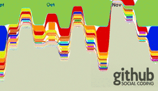

An example: Webserver
This simple web server written in Node responds with "Hello World" for every request.
var http = require('http');
http.createServer(function (req, res) {
res.writeHead(200, {'Content-Type': 'text/plain'});
res.end('Hello World\n');
}).listen(1337, "127.0.0.1");
console.log('Server running at http://127.0.0.1:1337/');
To run the server, put the code into a file example.js and execute it with the node program:
% node example.js Server running at http://127.0.0.1:1337/
Here is an example of a simple TCP server which listens on port 1337 and echoes whatever you send it:
var net = require('net');
var server = net.createServer(function (socket) {
socket.write("Echo server\r\n");
socket.pipe(socket);
});
server.listen(1337, "127.0.0.1");
Featured
Node.js becomes the most watched repo on github.
Explore Node.js
- Node.js Blog
Insight, perspective and events - About
A technical overview - Community
Mailing lists, tutorials, Q&A and more - Documentation
Official Node API Specifications - npm Registry
Modules, resources and more - Logos
Logo and desktop background - Jobs